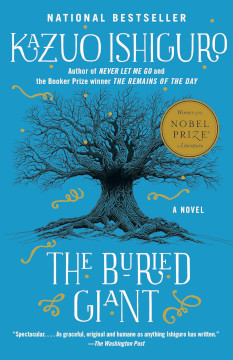

The Buried Giant

by Kazuo Ishiguro, 2015 
A mythical tale, set in post-Arthurian England. Author Kazuo Ishiguro, Nobel prize winner for literature, is also famous for Klara and the Sun, Never Let Me Go, and The Remains of the Day (yes, that one about butlers.)
Ishiguro moved from Japan to England as a young child, and his insightful observation of English and Western culture and myth benefits from that transplant's perspective - at once deeply at home in England, and also an outsider to it.
The tale is populated by ragged peoples, affected by a pervasive amnesia. Elderly couple Axl and Beatrice abruptly decide to leave their village of damp, hobbit-like underground burrows to visit a son they'd forgotten they had.
Simlarly, other characters are inspired by a variety of classical sources, from Beowulf to Arthur's knight and nephew Sir Gawain, now old and prone to quixotic rants - hinting at the subconscious conflict his code of honor has with the dark means by which he and other knights formerly helped Arthur achieve the current uneasy peace between native Britons and invading Saxons, now occupying villages across the land.
The journey is perilous, encountering roaming ogres and deadly pixies, not to mention soldiers of the local lords, and deadly conflicts within the party itself.
But any action is relayed with cool distance. Either through the pervasive mental fog, or using expert fighters' clinical analysis of the minutia of stance or grip, or by foretelling the ebb and flow of a battle by analysing the terrain, then allowing the battle itself to take place off stage, only assumed to have happened, by characters who weren't there.
This muted indirectness is entirely in keeping with the ambiguous, dreamlike style of the book, which is heightened by the sing-song formalism of the characters' medieval speech, and the narrator's occasional surreal hint of relating this tale to contemporaries who live in some other, unidentifiable, historic time.
The journey eventually comes to revolve around the dispatch - or defence - of a dragon that is said to be the source of everyone's forgetfulness, and as this goal approaches, vague fears surface of what might be remembered when the mist lifts. Will Axl and Beatrice's treasured relationship survive the revelations of their pasts? Will the longstanding truce in the land survive the remembering of wartime battles and atrocities? Will Saxon resentment at Arthur's desperate misdeeds be stoked into resumption of the violent war of invasion? This is left unresolved by the novel's end, but as reader, we know that the Saxons did ultimately conquer all of England, displacing the Britons culturally and politically, and probably murdering a good number of them along the way.
Personally, I'm minded to think of ancient England here as being a root of modern Western culture, and the mist as an allegory for the bland ignorance of our own culture's atrocities. The deliberate forgetting, like the mist, clouds all our conciousnesses, making it hard for us to remember who we are. Why we're here. The silent resentment of crushed minorities and genocide survivors forms a pressure, struggling against the placating narrative that everything's OK now. But, contained, the pressure builds.
Truly a buried giant, indeed.